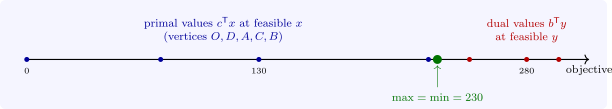

5.2 Weak and strong duality
Theorem 5.2.1 (Weak duality). If \(x\) is feasible for (P) and \(y\) for (D), then \(c^{\mathsf T}x \leq b^{\mathsf T}y\). Consequently, if \(c^{\mathsf T}x = b^{\mathsf T}y\), both are optimal; if (P) is unbounded, (D) is infeasible; and if (D) is unbounded, (P) is infeasible.
Proof. \(c^{\mathsf T}x \leq (A^{\mathsf T}y)^{\mathsf T}x = y^{\mathsf T}(Ax) \leq y^{\mathsf T}b\), using \(x \geq 0\) with \(A^{\mathsf T}y \geq c\) in the first step and \(y \geq 0\) with \(Ax \leq b\) in the second. If the values are equal, no feasible \(x\) can do better than \(b^{\mathsf T}y\), and no feasible \(y\) better than \(c^{\mathsf T}x\). If (P) were unbounded and (D) had a feasible \(y\), the primal objective would be bounded by \(b^{\mathsf T}y\). □
Theorem 5.2.2 (Strong duality). If (P) has an optimal solution, so does (D), and the optimal values are equal.
Proof. Write (P) in standard form with slacks: minimise \(-c^{\mathsf T}x\) subject to \(Ax + s = b\), \(x, s \geq 0\), with matrix \([A \mid I]\) and costs \((-c, 0)\). By the simplex method with Bland’s rule (Theorem 3.4.1) and two phases, there is an optimal basis \(B\) at which all reduced costs are non-negative. Put \(\mu ^{\mathsf T} = (-c_B)^{\mathsf T}B^{-1}\) and \(y = -\mu \). The reduced costs of the slack columns are \(0 - \mu ^{\mathsf T}e_i = y_i \geq 0\), and those of the \(x\) columns are \(-c_j - \mu ^{\mathsf T}A_j = (A^{\mathsf T}y)_j - c_j \geq 0\). So \(y\) is feasible for (D), and \(b^{\mathsf T}y = -\mu ^{\mathsf T}b\), which is minus the optimal value of the minimisation, that is \(c^{\mathsf T}x\). By weak duality both are optimal. □
Combining the two theorems, exactly one of the following holds for a primal–dual pair: both have optimal solutions with equal values; one is unbounded and the other infeasible; or both are infeasible. The last case does occur (Problem 5.7.3). The gap between primal and dual objective values, positive at any feasible pair that is not optimal, shrinks to zero at the optimum (Figure 4).

Questions on this section
Stuck on something here? Ask below and it stays attached to this topic.